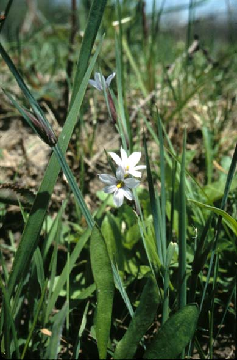
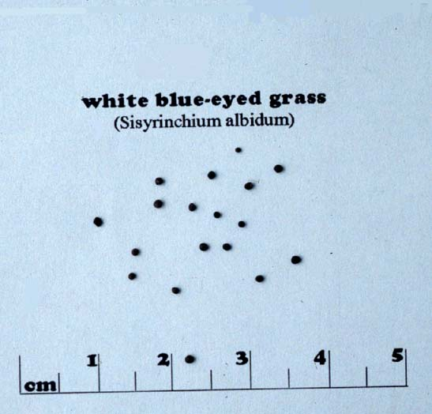

Sisyrinchium albidum
Family: Iridaceae
Blue-Eyed Grass
Swink/Wilhelm #6

FLOWERING: May - June
SEED TIMING: Late June - mid-July
HABITAT: Prairies
DIAGNOSTIC FEATURES: Grows 6 to 10 inches high with flat, grass-like leaves and clusters of flowers almost at the tip.
TO PICK: Round seed capsule about the size of a large BB within which develop tiny, black poppy-like seeds. Capsule gets hard and very dark brown when seeds are ripe.